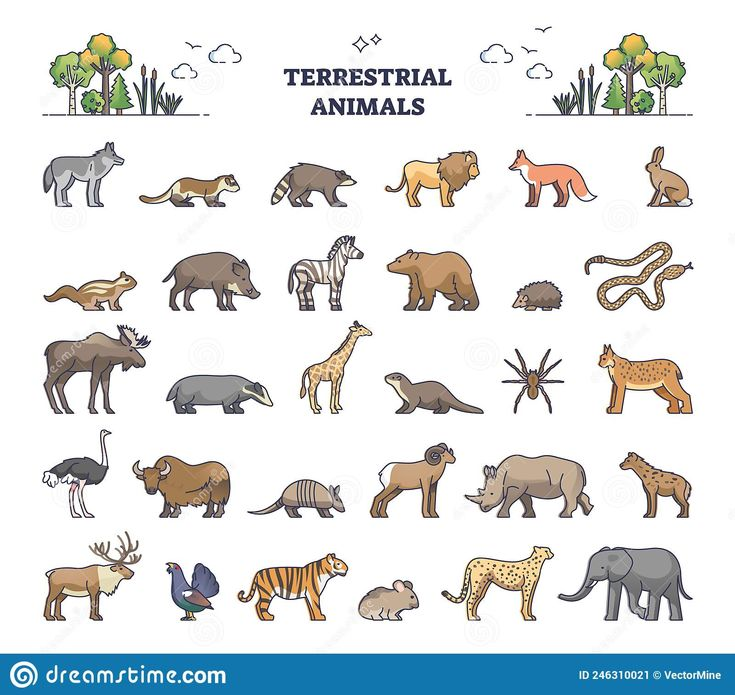

Terrestrial Animals

Terrestrial animals are species that live predominantly or entirely on land, as opposed to aquatic or aerial environments. This group includes a vast array of organisms, ranging from tiny insects to large mammals, each adapted to survive in terrestrial habitats such as forests, deserts, grasslands, and urban areas. These animals have evolved various physiological and anatomical features to cope with the challenges posed by their specific environments.
Key Characteristics
- 1. Locomotion: Many terrestrial animals have developed limbs capable of moving on hard surfaces, such as the legs of mammals and reptiles, which provide mobility necessary for finding food, escaping predators, and mating.
- 2. Respiration: Unlike aquatic animals, terrestrial species rely on lungs to breathe air directly, an adaptation crucial for sustaining their metabolic needs outside of water.
- 3. Temperature Regulation: Terrestrial animals often face fluctuating temperatures. Many of them, particularly mammals and birds, have developed methods of thermoregulation, including fur, feathers, and sweat glands.
Diversity
Terrestrial animals are categorized into several major groups based on their evolutionary characteristics
- Mammals: Warm-blooded vertebrates with hair or fur and mammary glands which produce milk for their young.
- Birds: Warm-blooded vertebrates that lay eggs and have feathers and wings, most of which are capable of flight.
- Reptiles: Cold-blooded vertebrates that usually lay eggs and have skin covered in scales or scutes.
Habitat and Adaptations
- Predators like lions and eagles rely on keen senses and physical prowess to hunt.
- Herbivores such as elephants and deer feed on plants and often develop symbiotic relationships with gut flora to help digest cellulose.
- Scavengers like vultures and hyenas play a crucial role in consuming carrion, thus preventing the spread of disease and recycling nutrients.
Conservation Challenges
Habitat loss due to agriculture, urbanization, and deforestation is the most significant threat to terrestrial animals. Climate change also poses a substantial risk, altering the habitats and food sources of many species. Conservation strategies for terrestrial animals often involve habitat preservation, legal protection measures, and in some cases, breeding programs to increase population sizes in critically endangered species.